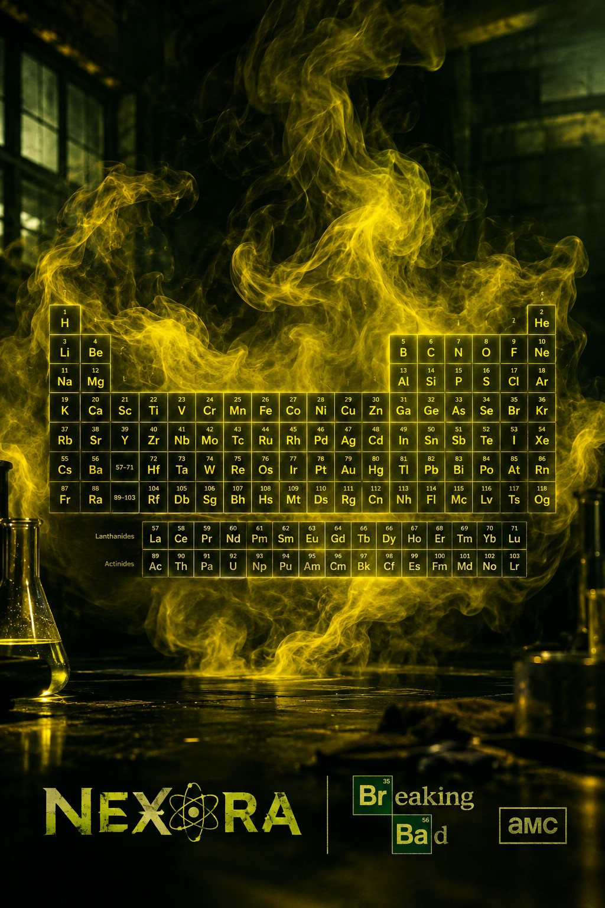

اگر به یک سیاهچاله نزدیک شویم چه اتفاقی میافتد؟
سفری به یکی از عجیبترین پدیدههای کیهان؛ جایی که گرانش، درک ما از جهان را به چالش میکشد.
ادامهٔ داستان ←مجلهٔ علم و ناشناختهها
از اختراعاتی که دنیا را تغییر دادند تا پرسشهایی که دانشمندان هنوز برایشان پاسخ قطعی ندارند. سفر علمی تو از اینجا شروع میشود.
کشف داستانها ←آرشیو دانش
سفری به یکی از عجیبترین پدیدههای کیهان؛ جایی که گرانش، درک ما از جهان را به چالش میکشد.
ادامهٔ داستان ←از نخستین پیامها تا دنیای متصل امروز؛ داستان مسیری که فاصلهها را کوچکتر کرد.
ادامهٔ داستان ←زندگی در تاریکی مطلق چگونه ممکن است و چه چیزهایی هنوز در انتظار کشف شدن هستند؟
ادامهٔ داستان ←نگاهی به فرایند پیچیدهای که تجربههای روزمره را به بخشی از حافظهٔ ما تبدیل میکند.
ادامهٔ داستان ←
از هیدروژن تا عناصر سنگین؛ وارد جدول شو و با نمادها و عدد اتمی عناصر آشنا شو.
ورود به جدول ←پوست، ماهیچهها، اسکلت و اندامهای بدن را در یک مدل سهبعدی تعاملی بررسی کن.
کاوش بدن انسان ←در جریان علم
این بخش برای تازهترین خبرهای علمی آماده شده است. خبرها پس از بررسی منابع معتبر به اینجا اضافه میشوند.
دربارهٔ NEXORA
NEXORA فضایی برای روایت علم به زبانی ساده، جذاب و دقیق است؛ جایی برای پرسیدن، بررسی کردن و فراتر رفتن از دانستههای امروز.